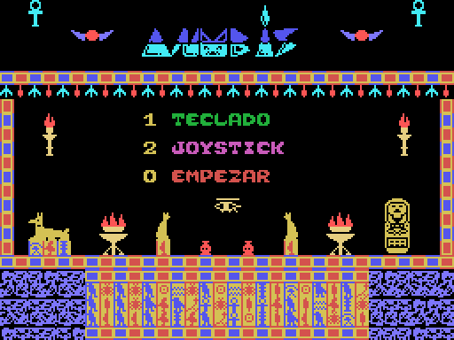
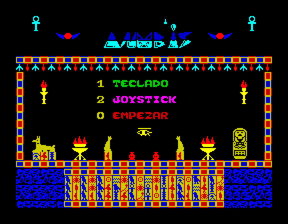

ANUBIS
Una aventura en las tumbas de Egipto · MSX y ZX Spectrum, directamente en el navegador

Versión MSX
La versión original, con sprites por hardware y música de varios canales del PSG.
Jugar →
Versión ZX Spectrum 48K
Conversión para el Spectrum 48K, con la melodía a dos voces en el altavoz.
Jugar →
Cómo jugar. En el menú pulsa 1 para teclado y 0 para empezar.
Muévete con los cursores (en Spectrum también QAOP).
El explorador lleva un jet pack para subir. Coge los escarabajos verdes (puntos) y los ankh (vidas),
esquiva arañas, serpientes, escorpiones, momias, murciélagos y gotas, y busca el loto azul en lo más recóndito del laberinto.